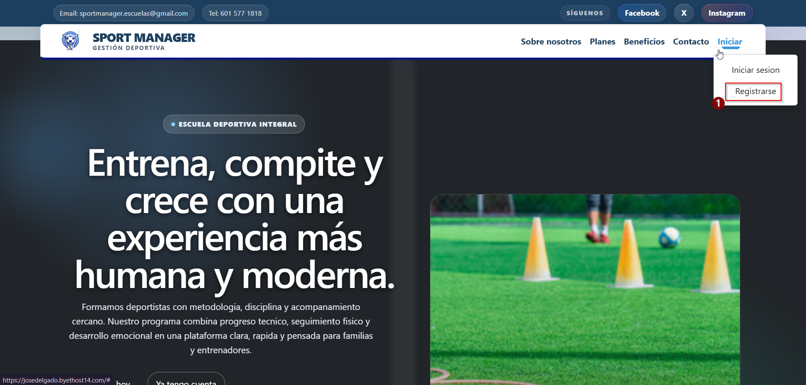
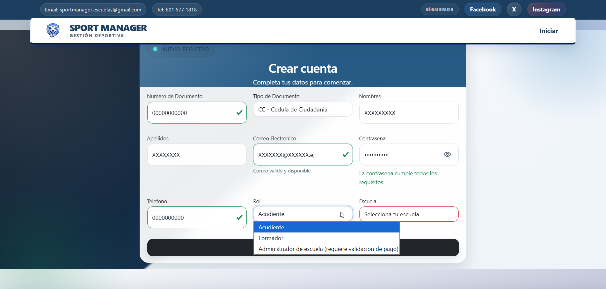
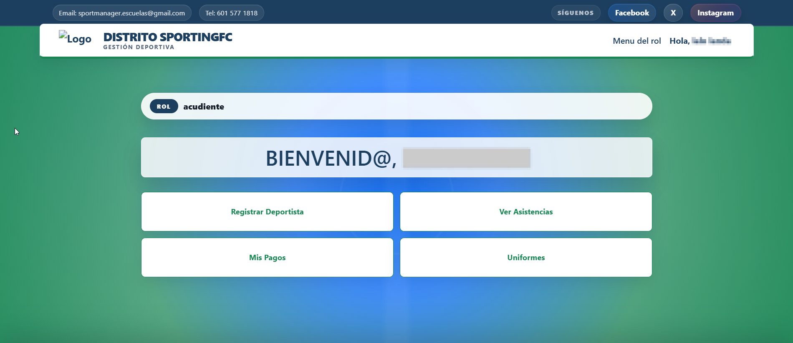
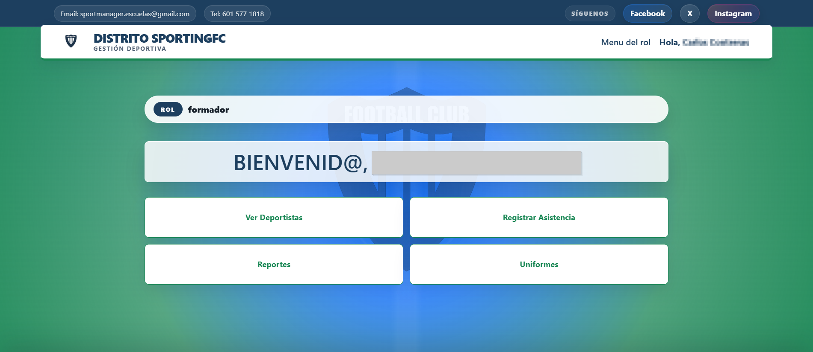
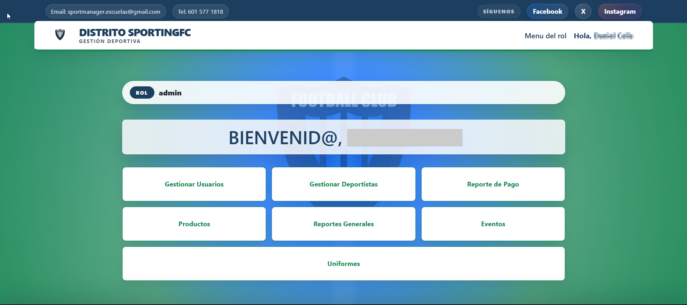
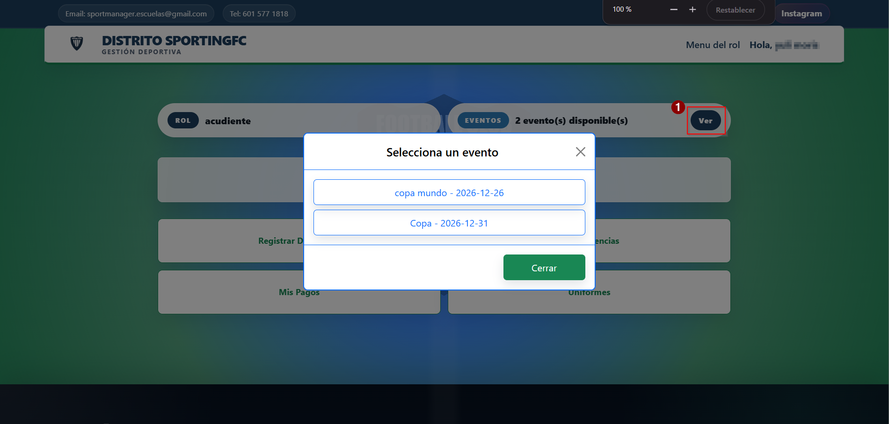

Manual de Usuario
Sport Manager
Guía completa para el uso del sistema de gestión de escuelas deportivas
 Sport Manager
Sport Manager
Guía completa para el uso del sistema de gestión de escuelas deportivas
Sport Manager
Sección 00
Sport Manager es una plataforma web para la administración integral de escuelas deportivas. Permite gestionar deportistas, registrar asistencias, controlar pagos, emitir Pagos, gestionar uniformes y productos, y generar reportes, todo desde un navegador.
Este manual cubre todas las funcionalidades del sistema organizadas por módulo. Cada sección indica qué roles tienen acceso a cada función.
Audiencia: Usuarios con los roles de Administrador de escuela, Acudiente y Formador (Entrenador). Las funciones exclusivas del Superadministrador se documentan donde corresponde.
Sección 01
Sección 02
El sistema maneja cuatro roles. Cada uno tiene un menú y permisos diferentes.
Padre, madre o responsable de uno o más deportistas. Puede registrar deportistas, ver asistencias, inscribirse a eventos, realizar pagos y consultar sus Pagos.
Entrenador o formador deportivo. Puede ver los deportistas de su escuela, registrar asistencias, gestionar uniformes y generar reportes de asistencia y deportistas.
Gestiona todos los aspectos de su escuela: usuarios, deportistas, eventos, Pagos, productos, uniformes, reportes y configuración de la escuela.
Acceso global al sistema. Aprueba administradores de escuela, gestiona todas las escuelas y tiene visibilidad total de Pagos y usuarios.
Sección 03
Cómo crear una cuenta en Sport Manager según tu rol.
Desde la página principal o la pantalla de inicio de sesión, haz clic en el botón Registrarse. Serás llevado al formulario de creación de cuenta.

Ingresa la siguiente información: número y tipo de documento (CC, TI, CE, PAS o PEP), nombres y apellidos, correo electrónico, teléfono (10 dígitos) y contraseña.

En el formulario, elige el rol que te corresponde: Acudiente (responsable de un deportista), Formador (entrenador) o Administrador (responsable de una escuela).
Si eres Acudiente o Formador, selecciona la escuela deportiva a la que perteneces en el selector desplegable. Los Administradores no seleccionan escuela en este paso.
Dependiendo de tu rol y la escuela elegida:
• Acudiente: si la escuela cobra inscripción, serás redirigido al formulario de pago
con tarjeta (VISA/Mastercard) o PSE. Una vez aprobado el pago, tu cuenta queda activa.
• Formador: tu solicitud queda en estado pendiente hasta que el
Administrador de la escuela la apruebe. No hay pago.
• Administrador: debes pagar una cuota de registro, que será verificada por el
Superadministrador.

Recibirás retroalimentación en pantalla sobre el estado de tu registro. Una vez tu cuenta esté aprobada, podrás iniciar sesión normalmente.
Sección 04
Cómo acceder a tu cuenta.
Navega a la dirección del sistema en tu navegador. Verás el formulario de login con los campos de correo y contraseña.

Escribe tu dirección de correo electrónico registrada y tu contraseña, luego haz clic en Ingresar.
Si los datos son correctos y tu cuenta está activa, serás redirigido al Dashboard correspondiente a tu rol.
Sección 05
En la pantalla de inicio de sesión, haz clic en el enlace de recuperación de contraseña.
Escribe la dirección de correo con la que te registraste y haz clic en Enviar enlace.

Recibirás un correo con un enlace de recuperación válido por 5 minutos. Haz clic en ese enlace para ir al formulario de nueva contraseña.
En la página que se abre, escribe y confirma tu nueva contraseña (debe cumplir los mismos requisitos de seguridad). Haz clic en Guardar.
Sección 06
Configuración de la escuela, branding, métodos de pago y datos generales.
Al iniciar sesión por primera vez después de ser aprobado, el sistema te redirigirá automáticamente al formulario de creación de escuela. Es obligatorio completar este paso para poder usar el sistema.

Ingresa: nombre de la escuela, disciplina deportiva, día de pago mensual (1 al 31), valor de inscripción, valor de mensualidad, correo oficial, teléfono (10 dígitos) y dirección.
Sube el escudo o logo de la escuela (imagen). Selecciona el color primario y el color secundario usando el selector de color. Estos colores se aplicarán a toda la interfaz del sistema para los usuarios de tu escuela. Opcionalmente, sube la imagen de la firma del responsable para los documentos.
Agrega al menos un método de pago para tu escuela. Para cada método ingresa: nombre de la entidad, tipo de método y, opcionalmente, una imagen del código QR. Puedes agregar múltiples métodos. Estos serán los que verán los acudientes al registrarse o pagar.
Haz clic en Guardar. Serás redirigido automáticamente al Dashboard, donde ya tendrás acceso a todas las funciones del Administrador.
Sección 07
La pantalla central desde la que accedes a todas las funciones del sistema. Su contenido varía según tu rol.
Como Acudiente tu panel muestra cuatro accesos directos:

📸 Captura de pantalla: panel principal del Acudiente
Si tu escuela tiene eventos activos, aparece un banner en la parte superior del panel con el número de eventos. Haz clic en Ver para abrir el modal y seleccionar el evento al que deseas inscribir un deportista.
En la barra superior del panel verás el badge ROL: Acudiente. Esto te confirma con qué perfil estás navegando el sistema en ese momento.
Como Formador tu panel muestra cuatro accesos directos:

En la barra superior verás el badge ROL: Entrenador. Si ves un rol diferente al esperado, cierra sesión y vuelve a ingresar.
El menú desplegable Menu del rol en la barra de navegación te da acceso directo a Deportistas, Registrar asistencia, Reportes, Eventos y Uniformes desde cualquier página del sistema.
Como Administrador tu panel muestra siete accesos directos organizados en filas de tres:

Si tu escuela tiene eventos activos, verás el mismo banner informativo de la parte superior. Desde ahí puedes consultar cuántos eventos están disponibles actualmente para los usuarios.
Si tu cuenta fue aprobada recientemente por el Superadministrador y aún no tienes escuela creada, el sistema te redirigirá automáticamente al formulario de creación de escuela antes de mostrarte el panel. Este paso es obligatorio para activar todas las funciones de Administrador.
El menú desplegable Menu del rol te da acceso completo a: Gestionar escuelas, Gestionar usuarios, Gestionar deportistas, Gestionar eventos, Crear evento, Productos, Reportes generales, Pagos y Uniformes, desde cualquier página del sistema.
Sección 08
Registrar, consultar y actualizar la información de los deportistas.
En el menú superior o desde el Dashboard, selecciona Registrar deportista (Acudiente) o Gestionar deportistas → Agregar (Administrador).
Ingresa: tipo y número de documento, nombres, apellidos, fecha de nacimiento, jornada, nivel deportivo, género y foto (opcional). La categoría se calcula automáticamente según la fecha de nacimiento.

Haz clic en Registrar. Si eres Acudiente y la escuela tiene un valor de inscripción, el sistema te redirigirá al formulario de pago para completar la inscripción del deportista.
Desde el menú superior selecciona Mis deportistas. Solo verás los deportistas que tú has registrado; no tienes visibilidad sobre los deportistas de otros acudientes.

Haz clic en Editar en la fila del deportista que deseas modificar. Puedes actualizar los datos personales, la foto y la jornada. Al guardar, los cambios quedan registrados de inmediato.
En la columna Estado verás un badge de color que indica si el deportista está Activo, Suspendido o Retirado. Como Acudiente solo puedes consultar el estado; para cambiarlo debes contactar al Administrador de tu escuela.
Desde el menú superior selecciona Deportistas. Verás el listado completo de todos los deportistas activos de tu escuela, sin importar qué acudiente los registró.

La tabla muestra foto, documento, nombres, apellidos, categoría, nivel, jornada y el acudiente responsable. Esta información es de solo lectura para el Formador; no dispones de botones de edición ni de cambio de estado.
Puedes filtrar el listado por nombre o número de documento usando el campo de búsqueda. Esto es útil para localizar rápidamente a un deportista antes de registrar asistencia o asignarle un uniforme.
Desde el menú selecciona Gestionar deportistas. Verás todos los deportistas de tu escuela con información completa: foto, documento, nombres, categoría, nivel, estado, jornada y el acudiente que los registró.

Haz clic en Editar en la fila del deportista. Puedes modificar todos los campos: datos personales, fecha de nacimiento (la categoría se recalcula sola), jornada, nivel y foto. Si subes una nueva foto, la anterior se elimina automáticamente del servidor.
En la columna Estado cada deportista tiene un selector desplegable con tres opciones: Activo, Suspendido y Retirado. Solo tienes que cambiar el valor en el selector y el sistema lo guarda automáticamente sin necesidad de hacer clic en "Guardar".
Si un deportista debe ser retirado permanentemente del sistema, haz clic en Deshabilitar. El sistema pedirá confirmación antes de proceder. Esta acción retira al deportista de todos los listados activos de la escuela.
Desde el módulo Gestionar usuarios, en la fila de cualquier acudiente aprobado, haz clic en Ver Deportistas. Esto te muestra exclusivamente los deportistas vinculados a ese usuario, útil para resolver dudas o verificar inscripciones.
Sección 09
El acceso y las acciones disponibles en este módulo varían según el rol.
Desde el Dashboard o el menú selecciona Ver Asistencias. Solo verás las asistencias de los deportistas que tú has registrado; no tienes acceso a las de otros acudientes.

Usa el selector de fecha para elegir el día que deseas consultar. Cada registro muestra: nombre del deportista, categoría, jornada, estado (con badge de color) y el comentario del formador si fue registrado.
Desde el menú superior selecciona Registrar asistencia. Verás el listado de todos los deportistas activos de tu escuela, con filtros por nombre, categoría y jornada para ubicarlos rápidamente.

Elige la fecha en el selector (por defecto aparece la fecha de hoy). Si ya existe asistencia registrada para esa fecha, los estados anteriores se cargarán automáticamente para que puedas revisarlos o corregirlos.
En la tarjeta de cada deportista haz clic en uno de los cuatro botones de estado. Opcionalmente escribe un comentario en el campo de texto de esa tarjeta.

Una vez marcado el estado de todos los deportistas, haz clic en Guardar asistencia. El sistema confirmará que los registros fueron guardados correctamente.
Sección 10
Desde el menú superior selecciona Eventos. Verás todos los eventos activos de tu escuela con su título, fecha, tipo y costo.

Si el evento tiene costo y tienes deportistas registrados, haz clic en Pagar para iniciar el proceso de pago e inscripción. Si el evento es gratuito, aparecerá el badge "Gratis". Si aún no tienes deportistas inscritos en el evento, verás "Inscríbete para pagar".
Desde el menú, selecciona Eventos. Verás el listado de todos los eventos de tu escuela con su estado y acciones disponibles.

Haz clic en Crear evento. Completa: título del evento, fecha (no puede ser una fecha pasada), tipo de evento, costo, cuotas y rol al que va dirigido. Guarda para publicarlo.

Desde el listado de gestión, usa el botón de activación/desactivación para controlar si el evento es visible para los usuarios. También puedes editar sus datos o ver los inscritos.
Sección 11
Cómo realizar pagos en línea con tarjeta o PSE, y cómo consultar tus pagos anteriores.
El proceso de pago comienza desde el registro (si la escuela cobra inscripción) o desde el módulo de Eventos al inscribir un deportista. Serás redirigido al formulario de pago automáticamente.
Ingresa tus datos de facturación: número de documento, tipo de documento y persona (Natural/Jurídica), dirección, ciudad, departamento, código postal y país (ej. CO para Colombia).
El sistema ofrece los métodos habilitados por tu escuela:
• Tarjeta de crédito/débito (VISA o Mastercard): ingresa número de tarjeta, nombre,
CVV y fecha de vencimiento.
• PSE: selecciona tu banco en el listado desplegable. Serás redirigido al portal
del banco para completar el pago.
Después del pago verás una pantalla de confirmación indicando si fue Aprobado, Pendiente o Rechazado. Si fue aprobado, la factura queda registrada automáticamente en el sistema.

Desde el menú, selecciona Mis pagos. Verás una tabla con todos tus pagos: número de factura, referencia, fecha, deportista, evento, cantidad, método de pago y monto. Puedes descargar cada factura en PDF o ver el comprobante adjunto.
Sección 12
Desde el menú, selecciona Reportes de Pagos. Verás todas las Pagos de tu escuela con: ID, deportista, evento, tipo de pago (badge de color) y monto.

Dentro puedes ver todos los pagos registrados para ese usuario: número de factura, fecha de emisión, evento o concepto asociado, deportista, método de pago utilizado y monto total. Esto te permite tener una trazabilidad completa de los movimientos del usuario sin salir de la vista.

Desde el listado de Pagos (Administrador) o el historial de pagos (Acudiente), haz clic en Visualizar para ver el detalle completo de la factura: datos del emisor, del deportista, concepto, cantidad y total.
Desde la vista de detalle de la factura o desde el listado, haz clic en Descargar PDF para obtener el documento en formato PDF listo para imprimir.

Desde el listado de Pagos o el detalle, haz clic en Subir comprobante. Si ya existe un comprobante, el botón dirá "Reemplazar comprobante".
Haz clic en el campo de archivo, selecciona el comprobante (JPG, PNG, WEBP o PDF, máximo 5 MB) y haz clic en Guardar comprobante.
Sección 13
Registro y consulta de uniformes asignados a los deportistas.
Desde el menú superior selecciona Uniformes. Verás la tabla con los uniformes asignados a los deportistas de tu escuela: número de camiseta, deportista, categoría, tipo, nombre y descripción.

Busca en la tabla el nombre de tu deportista para ver qué número de camiseta tiene asignado, el tipo de uniforme (competencia, entrenamiento o extra) y su nombre. Esta vista es de solo lectura; no puedes crear ni modificar uniformes.
Desde el menú superior selecciona Uniformes. Verás el listado completo de uniformes de la escuela con todos sus datos.

Haz clic en Agregar uniforme. Completa el formulario: número de camiseta (1 al 999), deportista al que se asigna, tipo de uniforme (competencia, entrenamiento o extra), nombre de la camiseta (máximo 10 caracteres) y descripción opcional. Haz clic en Guardar.

Como Formador puedes crear uniformes pero no puedes editarlos ni eliminarlos. Si necesitas corregir o borrar un registro, debes solicitarlo al Administrador de la escuela.
Desde el menú selecciona Uniformes. Verás el listado completo de uniformes de tu escuela. A diferencia de los otros roles, en tu vista aparecen los botones Editar y Borrar en cada fila.

Haz clic en Agregar uniforme. Completa: número de camiseta (1 al 999), deportista, tipo (competencia, entrenamiento o extra), nombre (máximo 10 caracteres) y descripción opcional. Guarda para registrarlo.
Haz clic en Editar en la fila del uniforme que deseas modificar.

Actualiza los campos que necesites y guarda los cambios.

Haz clic en Borrar en la fila correspondiente. El sistema pedirá confirmación antes de eliminar el registro permanentemente.
Sección 14
Catálogo de productos disponibles en la escuela.
Desde el menú, selecciona Productos. Verás el catálogo de productos de tu escuela con nombre, precio, descripción e imagen.

Haz clic en Agregar Nuevo. Completa: nombre del producto (máximo 30 caracteres), precio (mayor o igual a 0), descripción e imagen del producto. Guarda para añadirlo al catálogo.
Usa el botón Editar para actualizar los datos de un producto.

Usa el boton Deshabilitar para retirarlo del catálogo. El sistema pedirá confirmación antes de deshabilitarlo.

Sección 15
Exportación de datos del sistema en diferentes formatos.
Desde el menú, selecciona Reportes. Verás únicamente las tablas permitidas para tu rol, relacionadas con asistencia, deportistas y uniformes.

Para cada tabla habilitada tendrás botones de descarga en XLSX, CSV y PDF. Usa estos archivos para llevar control de asistencia, deportistas o uniformes de tu escuela.
Desde el menú, selecciona Reportes Generales o Reportes. Verás todas las fuentes de datos disponibles para exportar dentro de tu escuela.

Para cada tabla disponible, encontrarás tres botones de descarga:
• XLSX — Hoja de cálculo Excel con columnas formateadas y autoajuste.
• CSV — Archivo de texto separado por comas, compatible con cualquier hoja de cálculo.
• PDF — Documento PDF con tabla y encabezados, orientación horizontal.
Al hacer clic en cualquiera de los botones, el archivo se descargará automáticamente a tu equipo. Los datos del reporte corresponden únicamente a tu escuela.
Sección 16
Aprobación, rechazo y gestión de cuentas de usuarios de la escuela.
Desde el menú, selecciona Gestionar usuarios. Verás dos secciones: Usuarios pendientes (formadores que esperan aprobación) y Usuarios registrados (todos los activos de tu escuela).

En la sección de usuarios pendientes, revisa la información del usuario (nombre, email, rol). Haz clic en Aprobar para activar su cuenta o en Rechazar para denegarla.
En la sección de usuarios registrados puedes ver el detalle de cada uno: nombre, email, rol, cantidad de deportistas y estado. Usa Editar para modificar sus datos, Ver Deportistas para consultar los deportistas a su cargo o Ver factura para revisar su historial de pagos.
Sección 17
Resumen rápido de qué puede hacer cada tipo de usuario.
| Funcionalidad | Acudiente | Formador | Administrador |
|---|---|---|---|
| Dashboard | ✓ | ✓ | ✓ |
| Gestionar escuelas | — | — | Propia |
| Registrar deportistas | Propios | — | Escuela |
| Ver deportistas | Propios | Escuela | Escuela |
| Editar deportistas | Propios | — | ✓ |
| Cambiar estado deportista | — | — | ✓ |
| Registrar asistencia | — | ✓ | ✓ |
| Ver asistencia hijos | ✓ | — | — |
| Ver eventos | ✓ | ✓ | ✓ |
| Gestionar eventos | — | — | ✓ |
| Realizar pagos | ✓ | — | — |
| Ver mis pagos / Pagos | ✓ | — | Escuela |
| Subir comprobantes | ✓ | — | ✓ |
| Ver uniformes | ✓ | ✓ | ✓ |
| Crear uniformes | — | ✓ | ✓ |
| Editar / borrar uniformes | — | — | ✓ |
| Gestionar productos | — | — | ✓ |
| Reportes | — | Limitado | ✓ |
| Gestionar usuarios | — | — | Escuela |
✓ = acceso completo · — = sin acceso · Parcial = acceso limitado según indicación · Propios/Escuela/Propia = alcance según el rol